Damian Beresford | CTO, EggAI | Author architecting-agentic-systems.net | MAIKERS, Munich | October 2026
| What we'll work through | The question to answer |
|---|---|
| Architecture | What belongs inside the agent, and what needs shared control? |
| Implementation | Where do controls run, and which components can we build or get from a provider? |
| Evidence | How do we establish what was approved, what happened and what's missing? |
| Organisational adoption | How do teams agree, use and operate these controls across the organisation? |
| Local demo | How do the policy, enforcement and evidence connections look in the local implementation? |
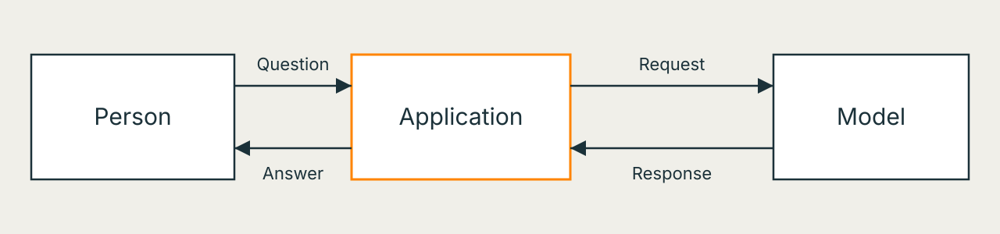
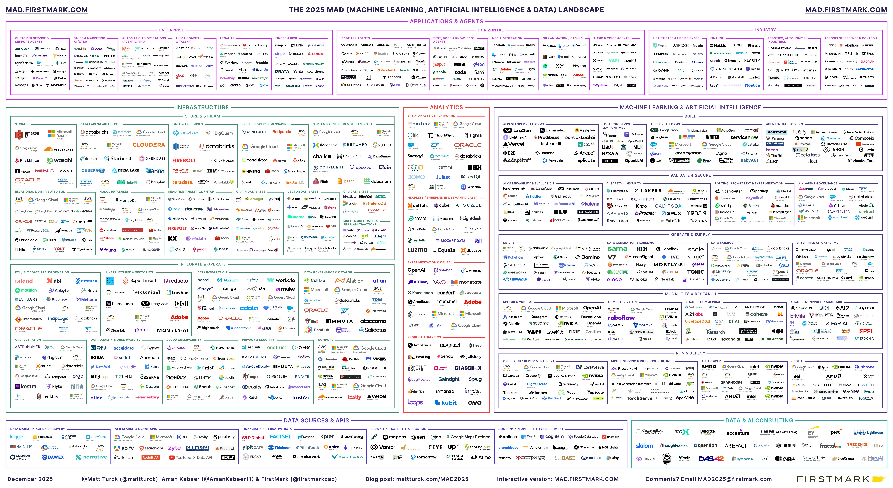
Source: Matt Turck / FirstMark, 2025 MAD report and full image
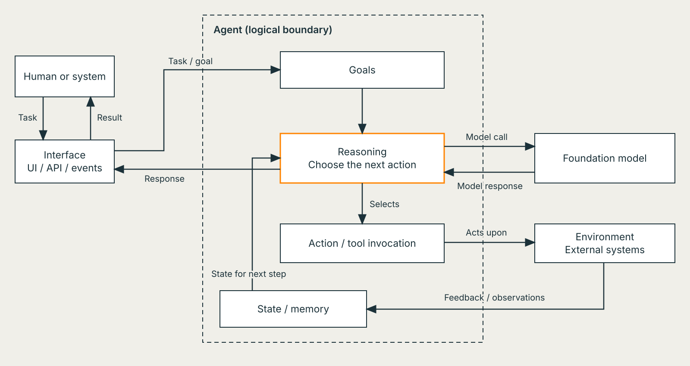
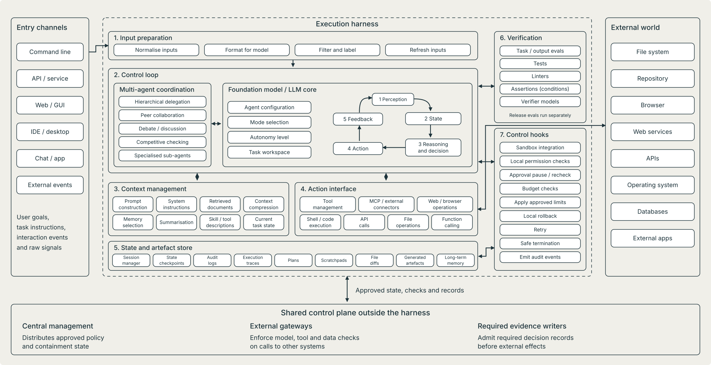
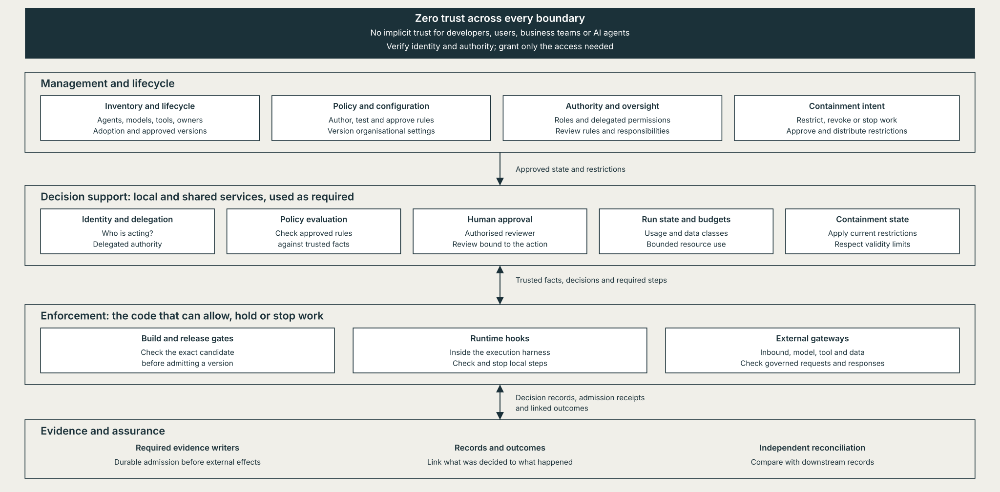
An AI control plane manages agent admission, authority, containment and evidence across connected systems.
Business teams own purpose, business decisions and outcomes; applications, runtimes and business systems keep their own controls.
| Group | What they use it for |
|---|---|
| Developers | Integrate checks, inspect decisions and debug agent behaviour |
| Platform / DevOps | Configure shared services, manage versions and release changes |
| SRE / operations | Monitor health, contain incidents and recover |
| Business owners | Define permitted use, evaluate outcomes and accept risk |
| Security / identity teams | Manage authority, credentials, isolation and access |
| Compliance / risk teams | Establish applicable requirements and required evidence |
| Human reviewers | Approve or reject actions within their authority |
| Audit / independent assurance | Examine decisions, outcomes and gaps using independent records |
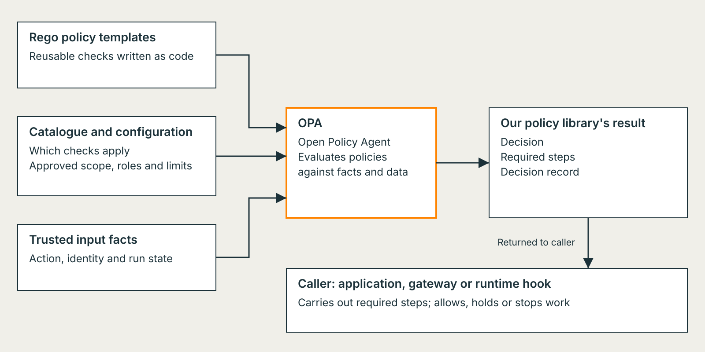
| Decision family | Example technology | Check before choosing |
|---|---|---|
| Rules evaluated against structured facts | Open Policy Agent and Rego | Input contract, decision shape and caller enforcement |
| Authorisation over principals, actions and resources | Cedar | Policy model, schema and service integration |
| Permissions derived from relationships | OpenFGA | Relationship model, consistency and lookup behaviour |
| Infrastructure configuration restrictions | Kyverno | Supported resources and actual enforcement point |
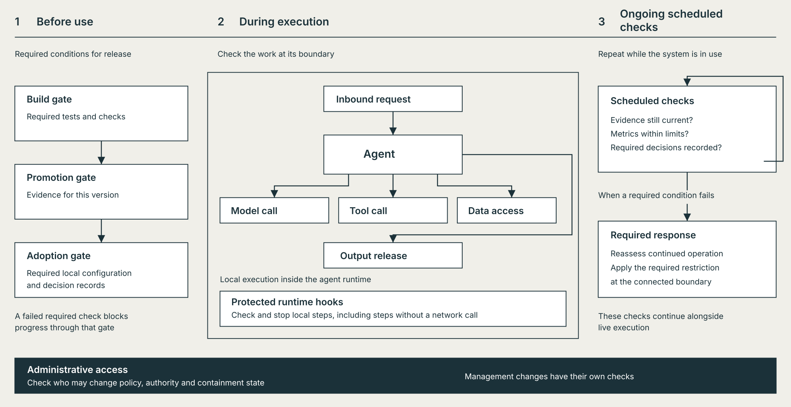
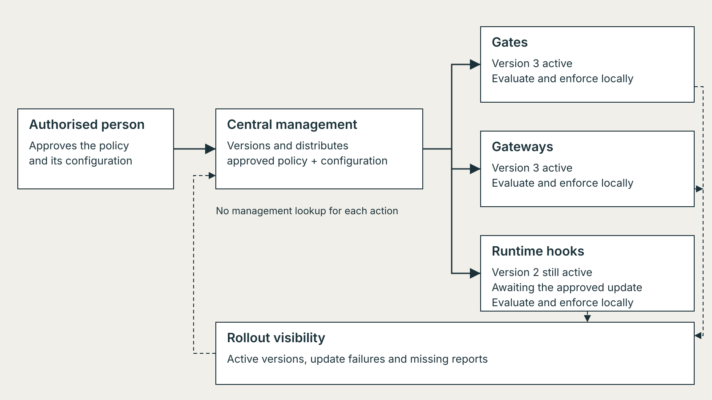
Illustrative version numbers and rollout state.
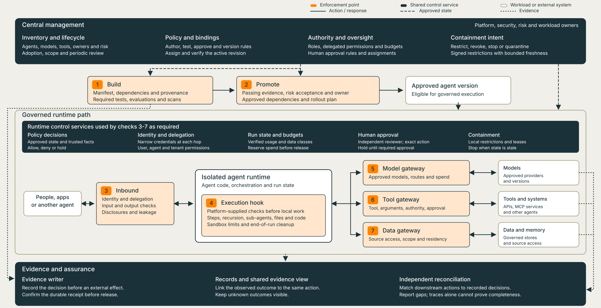
Manage common organisational rules across clouds, on-premises systems and agent platforms.
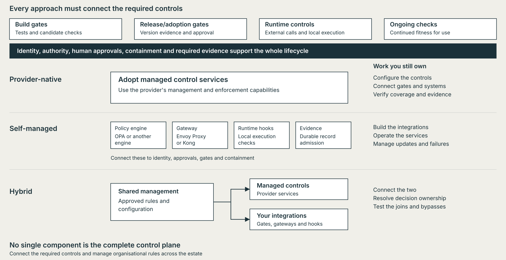
| Capability | AWS | Microsoft Azure | Google Cloud |
|---|---|---|---|
| Management and lifecycle | AgentCore Runtime; Agent Registry (preview) | Foundry Control Plane inventory across supported platforms | Gemini Enterprise Agent Platform: Agent Runtime and Registry |
| Build and release integration | CodeBuild and CodePipeline | GitHub Actions with hosted-agent deployment | Cloud Build with agent deployment |
| Identity and access | AgentCore Identity | Microsoft Entra integration | Agent Identity; identity and access policies |
| Policy and enforcement | AgentCore Gateway with Policy | AI gateway; guardrail policies and Azure Policy integration | Agent Gateway; access policies and Model Armor |
| Containment to verify | Runtime, gateway and credential effects | Stop versus block; existing runs versus new requests | Runtime, gateway and identity effects |
| Operational records | AgentCore Observability; policy decisions in CloudWatch | Application Insights; evaluations and security signals | Cloud Logging, Cloud Trace and evaluations |
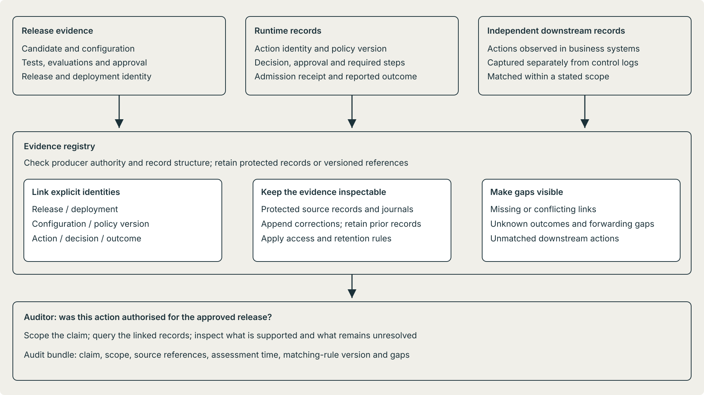
| Audit question | Records to connect | What the records alone don't establish |
|---|---|---|
| Was this exact release approved? | Candidate and configuration, test/evaluation results, exceptions and release approval | Approval for a previous version doesn't cover a changed one |
| Was this action authorised? | Identity, authority, policy version, decision, approval conditions and required steps | A verdict or admission receipt doesn't prove caller enforcement |
| What actually happened? | Action identity, outcome and separately captured downstream records | No outcome means uncertainty, not proof that nothing happened |
| Are actions missing from the control records? | Independent downstream action population matched against decisions and outcomes | Matching totals or selected traces don't establish complete coverage |
An audit bundle identifies the claim, scope, source records, assessment time, matching rules and unresolved gaps.
| Group | Change to agree before rollout |
|---|---|
| Developers | Integrate shared checks; diagnose refusals; request changes through an agreed route |
| Platform / DevOps | Own shared-service operation, compatible versions and the control-change process |
| SRE / operations | Practise containment, escalation, recovery and handovers with application teams |
| Business owners | Define permitted use, review thresholds and who can accept remaining risk |
| Security / identity | Agree delegated authority, credential controls and privileged change approval |
| Compliance / risk | Agree applicable controls, acceptable evidence and authorised exceptions |
| Human reviewers | Learn the system's limits; agree authority, workload and escalation routes |
| Audit / independent assurance | Agree audit questions, evidence scope and independent access before records are needed |
Agree responsibilities, pilot one integration, verify its outcomes, then expand coverage before broadening authority.
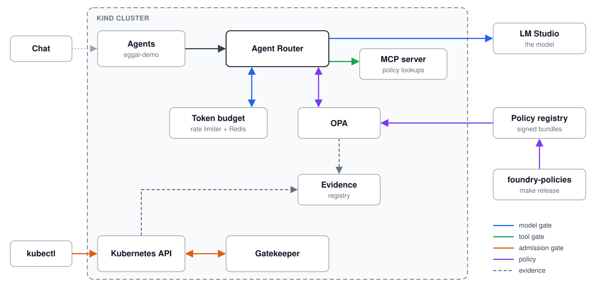
Follow the connection: policy and configuration; trusted facts; decision and required steps; enforcement; evidence.
Damian Beresford | CTO, EggAI